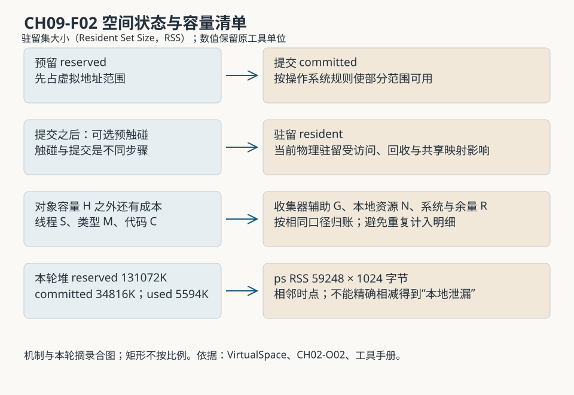

第三篇 · 运行时内存与对象模型
第 9 章 运行时数据区与进程内存
堆上限是一项约束，进程占用是一组不同口径的账。把每笔成本归到创建者、持有者和统计工具，才能判断增长来自对象、类型、线程，还是本地资源。
只用了几兆堆，进程为何占得更多
第 2 章的贯穿程序在一个安静的观察窗口中，堆已用 5594K，进程驻留却为 59248 个 1024 字节单位。程序没有制造泄漏或资源耗尽。这组正常数据已经足以提出问题：堆使用量究竟漏算了什么？本章重新读取那次保存的堆、映射和本地分类记录，不把它冒充一次新运行。
本书基线为 Java 开发工具包（Java Development Kit，JDK）25.0.5.0.2、HotSpot、macOS AArch64。先掌握进程地址空间及镜像与类型元数据。以下严格区分 Java 虚拟机（Java Virtual Machine，JVM）规范规定的职责、HotSpot 的结构，以及本机实际统计；三者不能直接画等号。
9.1 规范定义的运行时数据区
9.1.1 按共享关系理解职责
每个线程有自己的程序计数器和虚拟机栈：前者描述非本地方法当前指令的位置，后者容纳方法帧的局部变量、操作数和调用所需状态。本地方法执行时程序计数器值未定义。实现需要本地方法栈时，通常也随线程提供。线程退出会结束相应线程私有区域的生命期。多个线程共享堆和方法区；每个类型的运行时常量池属于方法区职责，用来表示常量和待解析的符号关系。S01
“线程私有”限定的是执行状态归属。局部变量中的引用可以指向共享对象，两个线程也可以在各自栈中保存同一个对象的引用。反过来，一个对象虽然暂时只有一个线程使用，仍可以分配在共享堆里。将引用变量位置与被引用对象位置分开，后续才能理解分配缓冲区和发布。

9.1.2 逻辑区域不是一张固定地址表
规范不限定所有实现使用同一对象表示、连续分区或收集策略，方法区在逻辑上属于堆，但并不因此等于 HotSpot 的可配置 Java 堆。运行时常量池也不是常量对象的统一物理仓库：元数据中的条目可以通过已解析引用关联堆对象。用“方法区＝元空间”来解释所有内容，会漏掉镜像、静态字段值、已编译代码以及跨区引用。
因此，规范图适合回答“应保存什么、由谁共享”，进程映射适合回答“哪段地址以何权限映射”，本地分类适合回答“由哪类运行时用途申请”。某工具没有名为“程序计数器”的独立映射，并不表示规范职责缺失；实现可以把相应状态放在线程结构、寄存器或执行帧的表示中。
9.2 HotSpot 的实际内存组成
9.2.1 从用途列账，再看工具
Java 堆容纳实际存在的实例和数组。类加载还需要元空间中的类型、方法及常量池元数据；编译器生成的机器代码占代码缓存，编译过程又会产生临时工作空间。线程需要本地栈与运行时线程结构；收集器还需要标记位图、记忆关系及队列等辅助结构。符号表、模块表、句柄、监视器和工具记录也有成本。
本地内存跟踪（Native Memory Tracking，NMT）按 HotSpot 申请内存时的用途分类，能够显示 Java Heap、Class、Thread、Code、GC 等项；其中垃圾收集（Garbage Collection，GC）辅助结构的成本不能算进对象已用堆。NMT 的计量又不等于操作系统对驻留页的计量。它自身也使用内存，第三方本地库的全部分配并不都在其覆盖范围。S02
| 用途 | reserved | committed | 解释 |
|---|---|---|---|
| Java Heap | 139264 | 34816 | 包含保护前缀，不能直接当作可用对象容量 |
| Class | 1048685 | 301 | 含压缩类空间预留及本地小结构 |
| Metaspace | 65551 | 1359 | 非类空间等按本工具标签归账 |
| Thread | 38969 | 217 | 19 个工具计数线程，预留不等于实际触碰 |
| Code | 249936 | 7920 | 代码与相关结构 |
| GC | 52022 | 50166 | 收集器辅助成本 |
这些是特定短进程的分类，不是建议按相同比例预配生产容量。Class 项中额外展示的 Metadata 明细与 Metaspace 主分类存在关联，不能把所有缩进明细再累加一次。保留工具原有层级，才能避免重复计算。
9.2.2 静态字段不会让对象进入元空间
第 8 章已把 Klass 与 java.lang.Class 镜像分开。锁定实现的 InstanceMirrorKlass::allocate_instance 从 Java 堆分配镜像，instance_size 在镜像基本大小上增加静态字段空间；java_lang_Class::allocate_mirror 再建立镜像与 Klass 的关联。静态字段元数据描述名称、类型和偏移，其值所在的静态字段存储则与堆中镜像关联。静态引用指向的对象仍是堆对象。S03
字符串也要拆开：String 对象及其内容数组是堆对象，常量池解析关系和驻留表管理结构承担另外的查找与持有职责。字符串字面量在源码中是常量，不表示它的内容数组位于本地元空间。缓存一个 Class 镜像可能延长加载器与元数据生命期；缓存一个 String 可能保持其内容存活。区域归属与引用持有共同决定账单。
9.3 预留、提交与驻留
9.3.1 地址范围、可用页与当前驻留
预留先占据一段虚拟地址范围；提交使其中一部分按操作系统规则成为可用内存。访问页面后是否建立物理驻留，以及之后是否回收、换出或压缩，由系统另行管理。驻留集大小（Resident Set Size，RSS）描述工具口径下当前驻留，不能由预留量直接推导。HotSpot 的 VirtualSpace::expand_by 会按页面粒度提交；commit_expanded 在提交成功后另行判断是否预触碰。实现上这也是两个步骤。

本轮收集器报告可用堆预留 131072K，即 128 兆二进制字节（mebibyte，MiB）；NMT 对 Java Heap 报告 139264KB。原映射中另有 8192K 不可访问前缀，两者差异有地址证据，并非堆越过了上限。堆提交 34816K，已用 5594K：这三项甚至都还没有涉及进程的其他区域。
9.3.2 共享映射和采集时点也会改变读数
本轮 ps 给出 RSS 59248、虚拟大小 490639248，手册规定两者单位均为 1024 字节。vmmap 给出的 physical footprint 是 37.5M，而分区 RESIDENT 总计为 356.1M。共享库、系统共享映射和系统归账方式使这些读数不能互换；不能把 footprint 当成换了单位的 RSS。原记录的 385.0G Guard 区域驻留为零，也直接说明巨大地址范围不等于同量物理消耗。S04
采集发生在启动后约 18—20 秒，工具依次附加，不是一次冻结快照。附加、加载、编译和页面回收都可能在间隙继续发生。应比较同一阶段、同一工具、相同单位和选项的连续记录；需要解释差值时再关联事件。尤其不要用“RSS 减去堆已用”声称得到了精确本地泄漏量：堆未用但驻留的页、共享页和采集时差都尚未排除。
9.4 堆、进程与容器预算
9.4.1 把峰值和余量写进预算
设对象容量上限为 H，容量规划还需考虑线程栈及线程结构 S、元数据 M、代码和编译活动 C、收集器辅助 G、应用本地资源 N，以及系统映射和运行波动余量 R。H＋S＋M＋C＋G＋N＋R 可作为成本清单，却不是一个能把不同工具值直接相加的精确公式。哪些项随堆规模、线程数或加载类型数变化，必须分别观察。
例如每增加一个平台线程，栈地址预留和已触碰部分可能不同；动态生成类型会增加元数据与解析结构；编译峰值可能早于稳定业务阶段；直接缓冲区池与本地库则可能在堆稳定时增长。只调低 H 而不减少长期持有者，未必能解决问题；只把 H 调高也可能挤掉本地空间。应在实际资源约束下观察峰值、退出与复用阶段，再确定余量。
9.4.2 容器终止与 Java 异常走不同路径
Linux 控制组（control group，cgroup）第二版的 memory.max 是组内内存硬限制；到达限制且无法回收时，内核可以在组中选择进程终止。组统计还涉及多个进程和文件等类别，不能直接当成某一个 Java 堆的使用量。容器资源感知可以影响虚拟机的默认容量选择，却不能替应用包办所有本地资源预算。S05
Java 分配路径报告 OutOfMemoryError，和内核因内存不足（Out Of Memory，OOM）终止进程，是不同证据链。后者可能来不及生成 Java 异常、堆转储或运行关闭钩子。退出状态只能提示候选原因，还要结合内核／容器事件、memory.events 与限制、进程日志来判断；单独看到 137 不能证明一定是内存终止。本书本轮运行在 macOS，没有容器，也没有主动触发任何终止案例。
9.5 内存不足与栈溢出
9.5.1 从失败的资源种类开始
OutOfMemoryError 是一类失败信号，附带信息帮助定位申请路径，不自动等于泄漏。Java heap space 指向对象分配容量；Metaspace 或 Compressed class space 指向相应元数据空间；unable to create native thread 要继续检查系统线程／进程限制、栈及本地空间；直接缓冲区容量限制则有其独立计数与预留逻辑。不同发行版和路径的信息可能变化，应保留完整原因链、版本和有效参数。

锁定 Universe 初始化了若干预分配的内存失败对象，包括 Java 堆与元空间等类别，使极端情况下报告错误不必完全依赖新的普通分配。它支持“按路径区分失败”这一机制解释，不代表本章已经触发过这些错误。NMT 未增长也不能排除全部本地库分配，异常中缺少某个关键词也不能替代进程级证据。
9.5.2 上限、持有与调用深度分别查
容量限制可能过小，短时峰值可能过高，长期持有也可能让回收无法腾出空间。只有区分这些情况，才知道是调整预算、限制并发、关闭资源还是修复持有链。泄漏判断需要生命期依据：对象或本地块在其业务职责结束后仍被不必要地保持，单次使用量高并不足以证明。
StackOverflowError 则指向线程调用所需栈空间超过允许范围。递归过深、相互递归或过大的帧需求属于候选原因；它与 Java 堆是否有空闲不是同一问题。扩展或新建栈无法取得空间时又可能表现为 OutOfMemoryError。处理之前保留调用栈、线程规模、栈配置和系统限制；提高栈上限会增加多线程预算，不能只看一个线程恢复了运行。
观察、源码与账本的对应
CH09-O01 复用 CH02-O02，输入是 CH01 的 ProgramJourney 与 message.txt，可从复用源码阅读页查看；对象、工作线程和限时退出均已在原章节记录。运行说明给出复用入口、命令和资源边界，复核记录保存原始材料摘要及选读位置。本章没有另建无意义的源码模块，编译依据仍是原 CH01 的真实编译记录。
阅读实现时，先在 memory/virtualspace.cpp 跟随 expand_by → commit_expanded → os::commit_memory，再区分预触碰条件；从 InstanceMirrorKlass 的大小计算和堆分配入口，追到 java_lang_Class 建立镜像关联。两个阅读问题分别解释空间状态与对象归属。精确文件、符号、提交和用途见来源索引，不要靠目录名称推断整段内存的用途。
本章数据证明堆统计与进程账本存在不同范围，不证明某种收集器更省内存，也没有证明容器安全预算、长期增长或泄漏原因。后续章会把对象大小、分配和本地所有权加入同一张账。
回顾与思考
先确定职责，再确定结构，最后确定计量口径。规范的共享关系解释谁能访问，HotSpot 的申请与持有解释成本归属，工具的时间和口径限定数据可说到哪里。内存异常或外部终止则要回到具体的失败路径。
- 为什么堆上限 128 MiB，NMT 的 Java Heap 预留仍可能更大？请同时使用地址区间和保护区解释。
- 一个静态 Map 保留大量 Class 镜像，会同时影响哪些账目？为什么仅清空其中一个普通对象引用不一定使元空间下降？
- 堆已用稳定而 RSS 持续增长，下一步应收集哪些同窗口数据？如何区分栈、代码、类和未跟踪本地分配？
第 10 章转向账本的最小单位：一个实例及其对象头、字段和填充究竟占多少字节。
来源与材料
- S01：Java 虚拟机规范 25，§2.5—§2.7，运行时数据区、帧和实现边界。
- S02：JDK 25 NMT 说明及锁定 VirtualSpace 实现。
- S03：锁定提交 1775ea114f649f0314e4e43eb6c802ff16dfab7c 的 InstanceMirrorKlass、java_lang_Class::allocate_mirror 与 Universe 初始化；路径和关键分支。
- S04：CH02-O02 原始记录，ps／vmmap 本机手册、堆、进程和 NMT 输出。
- S05：Linux cgroup v2 内存接口，memory.max、memory.current、memory.events；本轮仅文献研究。